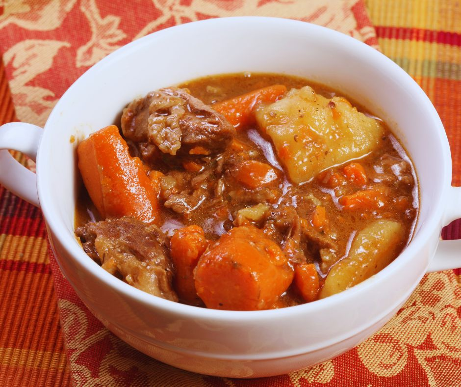

Zambian Beef Stew Receipe

Beef stew is a classic comfort food that is perfect for any time you’re in the mood for a hearty, filling meal.
This delicious stew is easy to make and can be customized to your liking with different vegetables, spices, and seasonings.
In this post, I’ll share with you a simple recipe for beef stew that is sure to satisfy your taste buds.
Ingredients
- 1 kg beef ( cut in pieces or cubes)
- 2 tablespoons of vegetable oil
- 1 large onion, chopped
- 4 cloves of garlic, minced
- 4 cups of water or Beef Broth
- 1 cup of red wine
- 2 bay leaves
- 3 large carrots, peeled and sliced
- 2 large potatoes, peeled and cubed
- 1 cup of frozen green peas
- Salt and pepper to taste
Steps
- Start by heating 2 tablespoons of vegetable oil in a large pot over medium-high heat.
Add the beef stew meat and cook until browned on all sides.
This should take about 10 minutes. Once the meat is browned, remove it from the pot and set it aside.
- In the same pot, add the chopped onion and minced garlic.
Cook until the onion is translucent, which should take about 5 minutes.
- Next, add 4 cups of water or beef broth, (if you add beef broth, add also 2 cups of water), and 1 cup of red wine to the pot.
Stir well to combine all the ingredients.
- Add 2 bay leaves and 1 teaspoon of dried herbs to the pot.
These spices will give the stew its signature flavor.
- Return the beef stew meat to the pot and bring the mixture to a boil.
Once it’s boiling, reduce the heat to low and simmer for 1 hour.
- After an hour, add the sliced carrots and cubed potatoes to the pot. Continue to simmer the stew for another hour.
he beef should be tender and the vegetables should be cooked through.
- Finally, add 1 cup of frozen peas to the pot and simmer for an additional 10 minutes.
- Taste the stew and season with salt and pepper to your liking.
- Remove the bay leaves from the pot before serving.
- Serve the beef stew hot. You can serve it with rice,pap etc